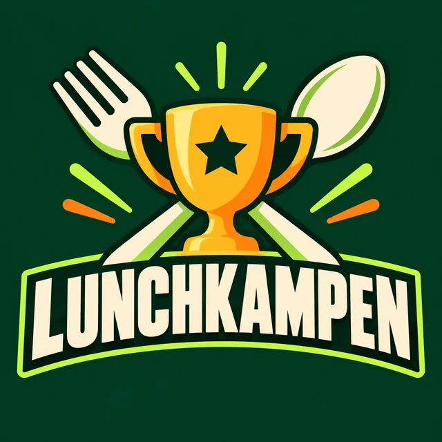

KOLLEGORNAS LUNCHDUELL
LUNCHKAMPEN
En arbetsdag. En lunchvinnare. Din röst räknas.
Ansluter till den gemensamma röstningen …
✦ Rösta på din favorit. Följ kampen live. Låt bästa lunchstället vinna! ✦
AKTUELL VECKA
Vecka –⏱ LUNCHKAMPEN
--:--:--Röstningen stänger kl. 11:05
Varje vardag · svensk tid (Stockholm)
🏆 DAGENS LEDARE0 röster
Inga röster ännu
Bli först med att välja lunchställe.
Vilka ska med på lunch?
0 personerIngen har röstat den här dagen ännu.
Din röst i kampen
Skriv ditt namn och välj ett lunchställe.
En röst per Google-konto och dag. Namn visas för kollegorna när de håller muspekaren över eller markerar ett lunchställe. Rösten kan ångras från samma webbläsare.
Ställningen just nu
0 rösterHåll muspekaren över ett ställe (eller tryck på det i mobilen) för att se vilka som röstat. Resultaten uppdateras automatiskt.
Saknas ditt favoritställe?
Föreslå ett nytt ställe. Det dyker upp i listan för alla och gäller kommande veckor också.
Hantera egna förslag
Du kan ta bort egna tillagda restauranger från denna webbläsare. Standardställen och andras förslag hanteras via Firebase-konsolen.